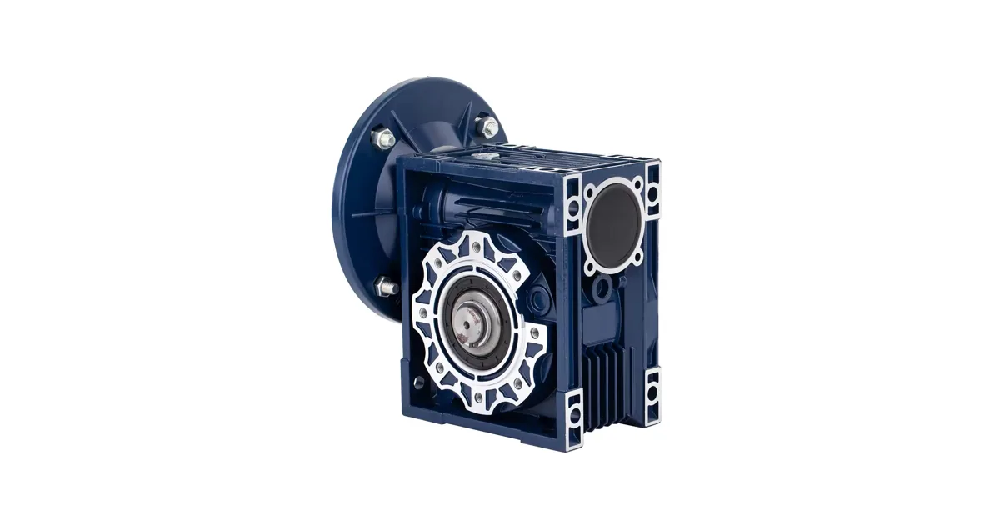

Собственное производствоПромышленные редукторы для производителей оборудования•Отгрузка по всей России•Аналоги SEW, NORD, Bonfiglioli без переделки рамы•Расчёт и КП за 15 минут•Гарантия 36 месяцевПромышленные редукторы для производителей оборудования•Отгрузка по всей России•Аналоги SEW, NORD, Bonfiglioli без переделки рамы•Расчёт и КП за 15 минут•Гарантия 36 месяцев
Главная›Блог›Фланцы и валы Boneng: что реально решает вопрос замены
Подбор
Фланцы и валы Boneng: что реально решает вопрос замены
Опыт инженеров Завода Редукторов · чтение ~9 минут
Замена редуктора Boneng — это в первую очередь работа с присоединительными размерами, а не поиск строки в таблице моментов. Китайский производитель выпускает линейку серий с разной геометрией, и именно она определяет, встанет ли аналог ZR на существующее место. Ниже — разбор по сериям и размерам без выдуманных соответствий.
Сразу о главном. Готовой таблицы соответствия «модель Boneng — типоразмер ZR» мы не публикуем и не выводим её из каталога. Взаимозаменяемость определяется присоединительными и габаритными размерами: диаметром вала, шпоночным пазом, фланцем и межосевыми расстояниями. Подбор по этой марке выполняет инженер, используя шильд, фото узла или габаритный чертёж. Аналог ZR считается под задачу, цена — по запросу.
Что даёт китайское происхождение Boneng
Boneng — производитель из Китая, поэтому при замене важно учитывать не только момент, но и то, что присоединительные размеры у разных серий могут отличаться от привычных европейских стандартов. Даже внутри одной марки серии K, R и F дают разную геометрию: соосные, плоские и коническо-цилиндрические исполнения различаются вылетом вала и расположением фланца.
Из этого следует простой вывод: подбирать аналог ZR нужно по конкретным замерам, а не по общему обозначению. Одинаковый номинальный момент не гарантирует, что редуктор встанет на ту же плиту.
Почему момент не заменяет геометрию
Два редуктора могут иметь одинаковый номинальный момент, но разные диаметры валов — например, у одного вал сорок миллиметров, у другого сорок пять. Фланцы тоже отличаются: у одного четыре отверстия по диаметру двести, у другого восемь по двести пятьдесят. Момент говорит лишь о том, выдержит ли редуктор нагрузку, но не о том, встанет ли он на место.
Поэтому подбор аналога начинается с геометрии, и только потом проверяется нагрузочная способность. Такой порядок исключает ситуацию, когда купленный редуктор приходится дорабатывать болгаркой на объекте.
Что контролируется при подборе аналога ZR под Boneng
Параметр
Где взять
Зачем нужен
Диаметр выходного вала
Замер штангенциркулем по цилиндрической части
Основная посадка
Шпоночный паз
Замер ширины и глубины
Передача момента
Диаметр фланца
Замер наружный и по осям отверстий
Посадка на машину
Число и диаметр отверстий
Подсчёт и замер
Совпадение крепежа
Межосевое расстояние
Замер между осями отверстий вдоль и поперёк
Посадка на существующую раму
Высота оси вала
Замер от опорной плоскости до оси
Высотное совпадение привода
Серии Boneng: K, R и F
В линейке Boneng серия K — это коническо-цилиндрический мотор-редуктор с тремя ступенями, момент от ста пятидесяти до пятидесяти восьми тысяч Н·м, мощность от ноль целых двенадцати до двухсот киловатт, передаточное отношение от четырёх до ста восьмидесяти. Серия R — цилиндрический редуктор с двумя-четырьмя ступенями, может иметь сплошной или полый вал со шпонкой, стяжной втулкой или эвольвентным шлицем. Серия F — плоский цилиндрический мотор-редуктор.
Эти три серии покрывают разные компоновки: соосную, плоскую и коническо-цилиндрическую. При замене на аналог ZR важно определить, к какой из них относится ваш редуктор, потому что от этого зависят и вылет вала, и крепёжные размеры.

Редуктор Boneng: червячный исполнение
Как проходит подбор аналога ZR
Вы присылаете обозначение с шильда или набор замеров. Инженер сверяет их с номенклатурой ZR и даёт один из трёх ответов: встаёт без переделок, встаёт с переходной плитой, не встаёт и нужен другой типоразмер. Третий ответ тоже возможен — это честнее, чем продать редуктор, который потребует доработки на месте.
Параллельно считается нагрузочная способность: момент, радиальная нагрузка на выходной вал, тепловая мощность. Предварительный вариант можно собрать самостоятельно в калькуляторе.
Габаритный чертёж и присоединительные размеры
Вал, фланец и двигатель: что остаётся от старого привода
Насадные исполнения с полым валом ставятся прямо на вал машины и фиксируются стяжной шайбой или шпонкой. Они компактнее и не требуют муфты, но предъявляют требования к валу машины: допуск на диаметр, шероховатость, отсутствие задиров. Сплошной вал требует муфты и выставления соосности, зато допускает большее разнообразие компоновок.
Со стороны двигателя у мотор-редукторов Boneng часто стоит фланец по IEC — стандартный ряд посадочных мест под асинхронные двигатели. Если типоразмер фланца совпадает, двигатель можно оставить свой даже при замене редукторной части. Это экономит и деньги, и время.
Какие данные собрать перед заказом
Что нужно инженеру для подбора и где это взять
Параметр
Где взять
Зачем нужен
Полное обозначение с шильда
табличка на корпусе редуктора
определяет серию Boneng и типоразмер
Мощность и обороты двигателя
шильд двигателя или паспорт привода
задаёт входную ступень и запас
Обороты на выходе
технолог или расчёт по механизму
через них считается передаточное число
Монтажное положение
по факту установки на объекте
определяет уровень масла и расположение пробок
Присоединительные размеры
замер или габаритный чертёж
главное условие взаимозаменяемости
Характер нагрузки и режим
технолог, паспорт механизма
через него выбирается сервис-фактор
Доставка, оплата и гарантия
Отгружаем по всей России транспортными компаниями, самовывоз — со склада в Челябинске. Оплата по счёту для юридических лиц, для новых клиентов возможна частичная предоплата. На изделия собственного производства ZR даём гарантию 36 месяцев и передаём паспорт с фактическими параметрами. Условия и сроки — на страницах доставки и цен: конкретную стоимость называем после подбора, потому что она зависит от исполнения, передаточного числа и комплектации двигателем.
Не уверены в подборе? Пришлите фото шильдика на zr@zavod-red.ru — инженер прочитает обозначение, сверит присоединительные размеры и пришлёт расчёт. Или соберите вариант сами в калькуляторе подбора: там задаются диапазоны по мощности, оборотам, моменту и передаточному числу.
Частые вопросы
Хватит ли фото шильда для подбора аналога ZR?
Часто хватает: по обозначению определяется серия и типоразмер, а по ним — габариты. Если шильд нечитаем, нужны замеры вала, фланца и межосевых расстояний.
Можно ли поставить аналог с другим диаметром вала?
Можно, если предусмотреть переходную втулку или заменить полумуфту. Но это дополнительное звено в приводе, поэтому лучше подобрать совпадение по валу.
Что такое переходная плита и когда она нужна?
Это промежуточная плита, компенсирующая несовпадение отверстий или высоты оси. Мы её проектируем и изготавливаем, когда прямого совпадения нет.
Останется ли мой двигатель?
Если фланец по IEC совпадает — да. Это обычная ситуация при замене мотор-редуктора: меняется редукторная часть, двигатель остаётся.
Почему нет готовой таблицы соответствия по Boneng?
Потому что взаимозаменяемость — инженерное заключение по габаритам, а не строчка из каталога. Публиковать выдуманное соответствие мы не будем.
Как заказать редуктор по образцу?
Пришлите фото или чертёж старого редуктора — изготовим аналог с теми же присоединительными. Переходной фланец или спецвал спроектируем под вашу геометрию.